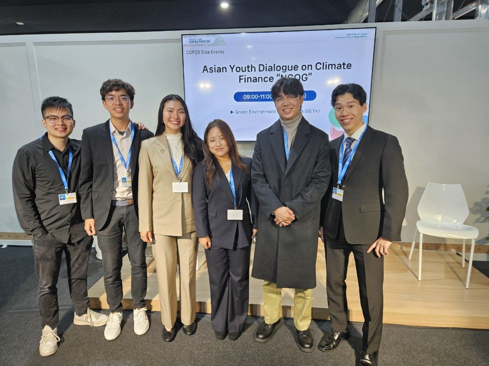
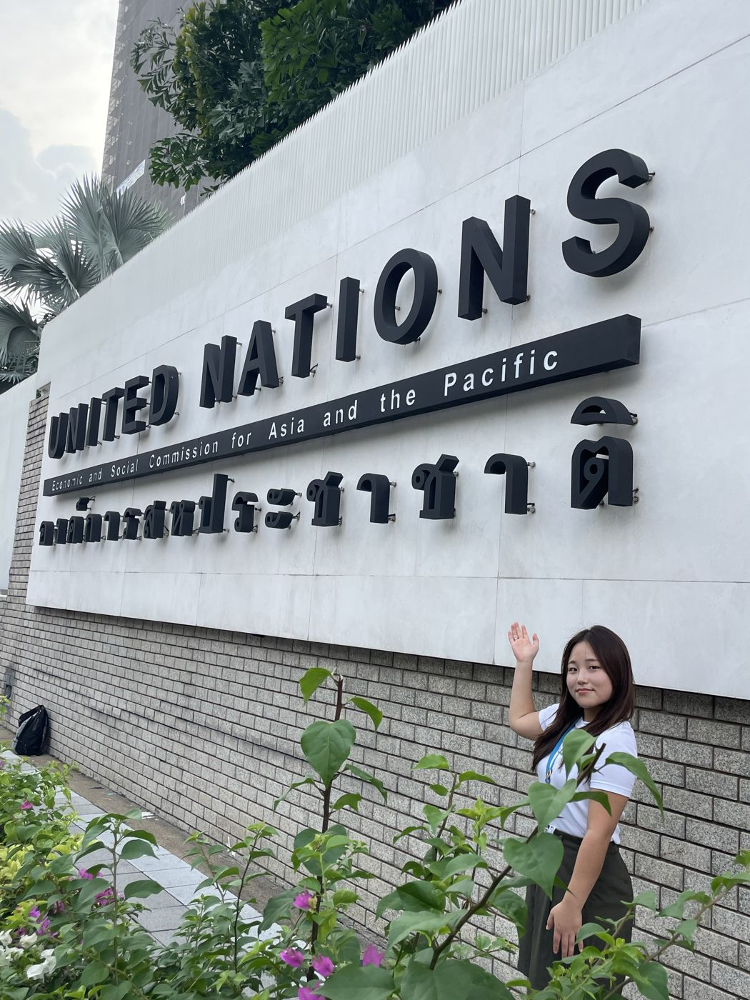
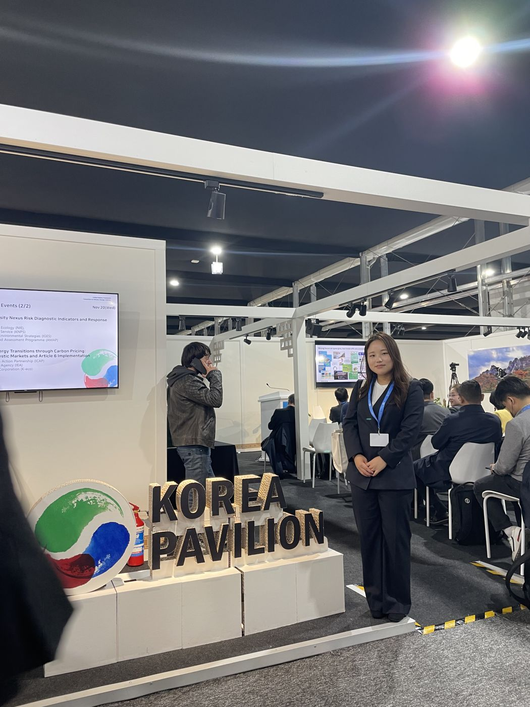
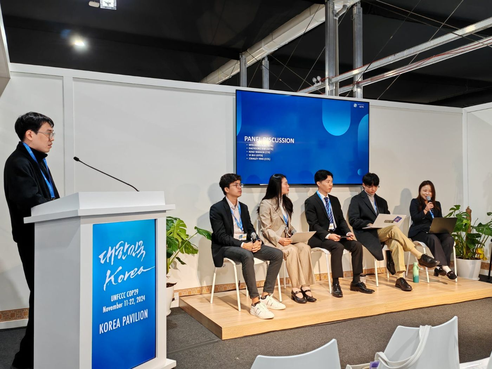
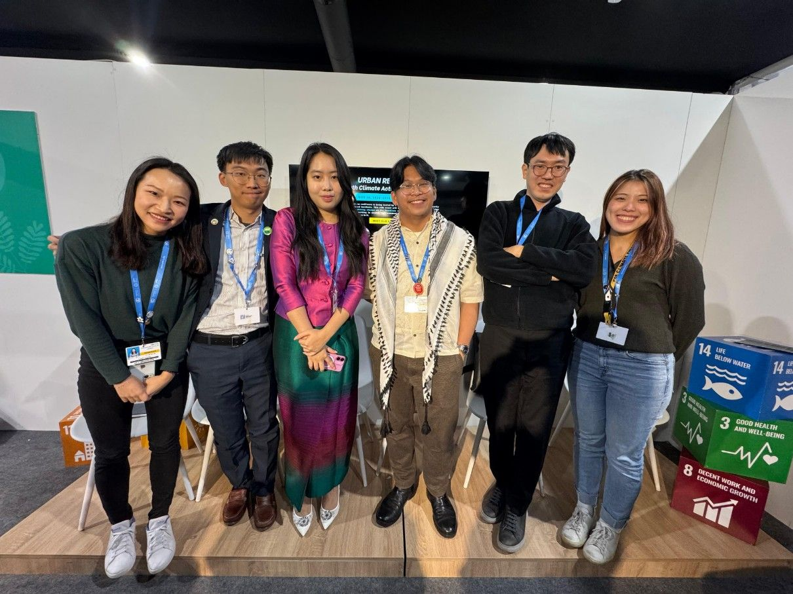
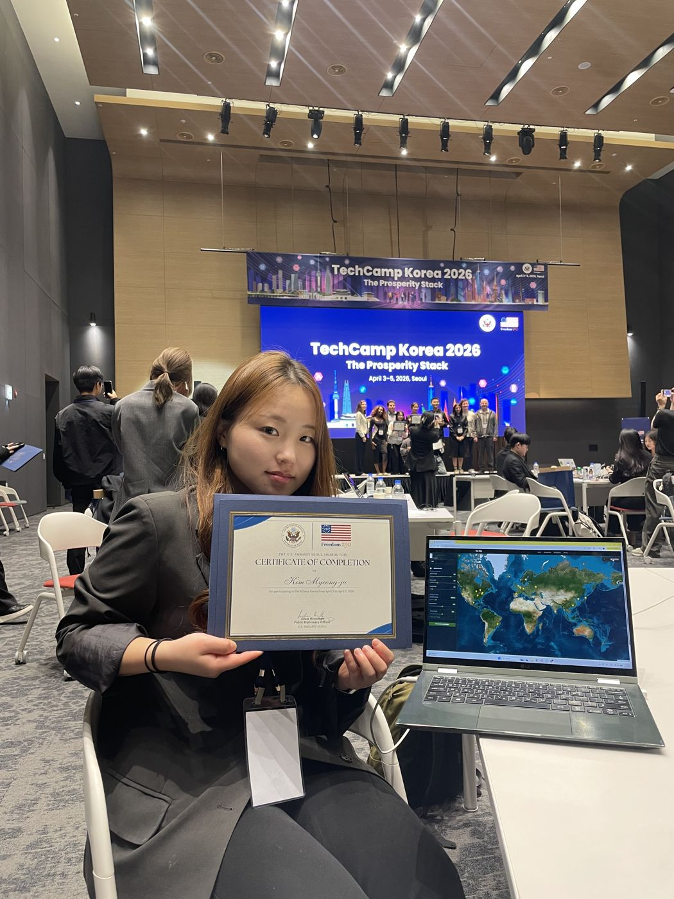
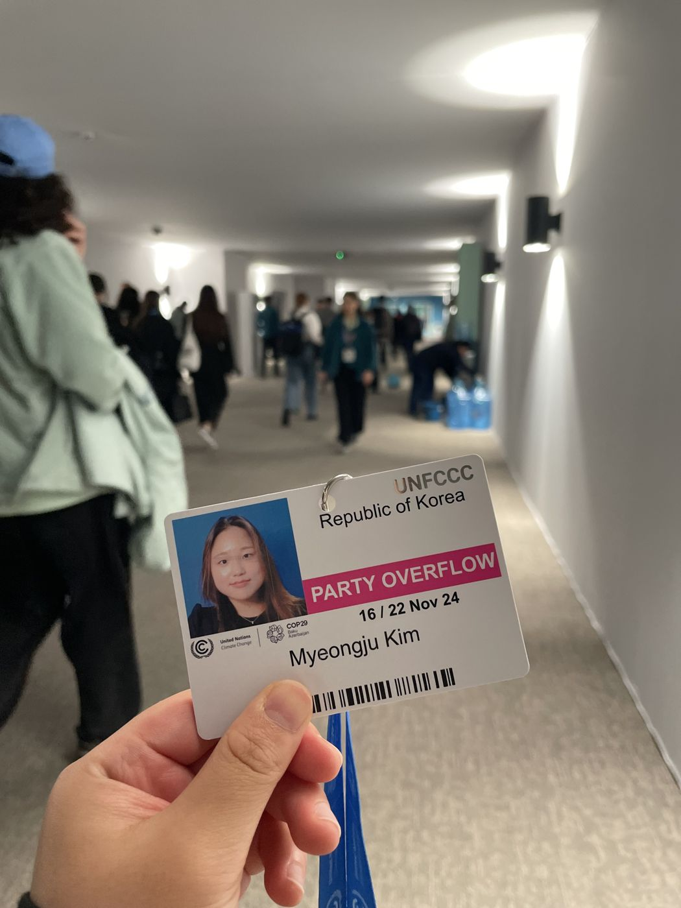
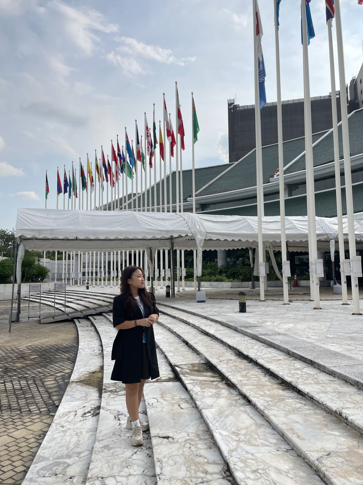
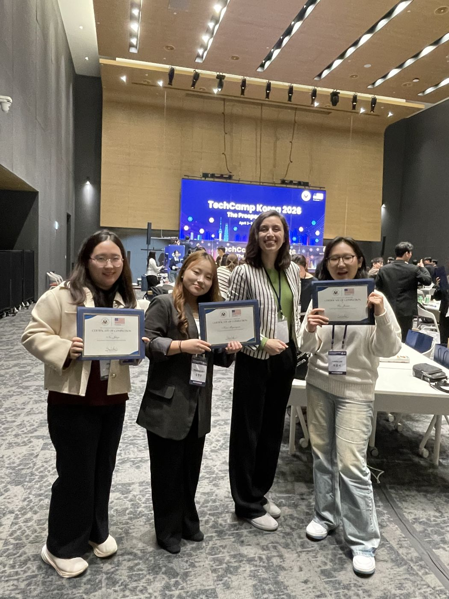

Expected May 2027
Johns Hopkins University
M.S.E. in Geography and Environmental Engineering · Whiting School of Engineering
Coursework: Natural Disaster Risk Modeling, Remote Sensing of the Environment, Numerical Methods
39.3299° N, 76.6205° W · Baltimore
Environmental Engineer / Flood & Climate Risk / Geospatial Analysis
Environmental engineer mapping flood and disaster risk with GIS, statistics and machine learning — and carrying that evidence into climate policy.
01 — About
I work at the intersection of data, hazards and policy. At Johns Hopkins I build machine‑learning and hybrid statistical/physics‑based models to predict flood extent across the Southeastern U.S. Before that, I used GIS (QGIS) at UN ESCAP to map disaster risk and assess vulnerability across the Asia‑Pacific, supported climate disclosures at KPMG Korea, and represented Asian youth on climate finance at COP28 and COP29.
02 — Experience
Johns Hopkins University
Samjong KPMG (KPMG Korea)
United Nations ESCAP · Bangkok
Climate Change Youth Organization GEYK (NGO)
Korea Institute of Science and Technology (KIST)
Environmental Modeling & Chemistry Laboratory
Youth Social Innovator Group SK‑Rookie
03 — In the Field









04 — Education
Expected May 2027
M.S.E. in Geography and Environmental Engineering · Whiting School of Engineering
Coursework: Natural Disaster Risk Modeling, Remote Sensing of the Environment, Numerical Methods
March 2026
B.S. in Environmental Engineering and Global Technology Management
Thesis: Development and Application of a Multidimensional Green Budget Tagging Framework for Climate and Environmental Public Financial Management in South Korea — manuscript under review.
05 — Awards
06 — Certificates & Training
07 — Affiliations
Member · 2023 — Present
Official Youth Constituency of the UNFCCC — youth climate policy discussions and international climate negotiations.
Project Manager · 2023 — 2025
Youth delegation to COP28 & COP29; Asian Youth Dialogue on climate finance.
Vice President · 2021
Managed three climate action plans for resilient response.
Director of Public Relations · 2022 — 2023
Led external communications and promoted 10+ major academic and social events.
Volunteer Translator · 2020
Translated educational magazines for children from multicultural families.
08 — Contact
Open to research collaborations and roles in climate risk, hazard modeling and resilience.